El objetivo de esta memoria es aprender a utilizar varias funciones del panel de control
13. .Eliminar el usuario creado (usr1). Siempre que vayamos a crear usuarios o eliminarlos o modificarlos, se realizará desde la consola de administración de equipos. Esta vez lo vamos a hacer desde el panel de control. Accede al Panel de Control, Cuentas de Usuario. Elimina la cuenta usr1, pero conservando los archivos.
Accedo al panel de control, cuentas de usuario.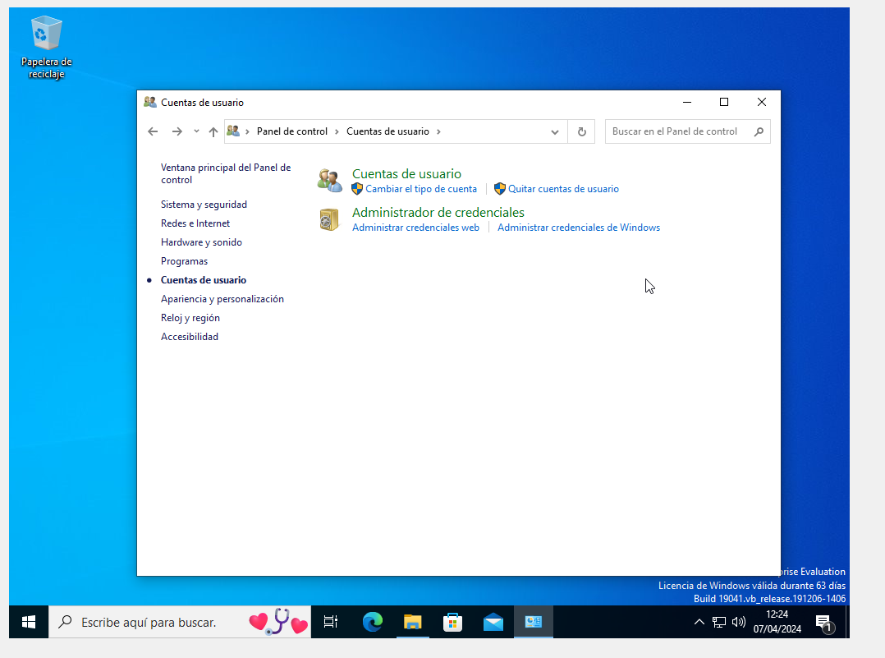
Selecciono la cuenta del usuario que quiero alterar. En este caso usr1.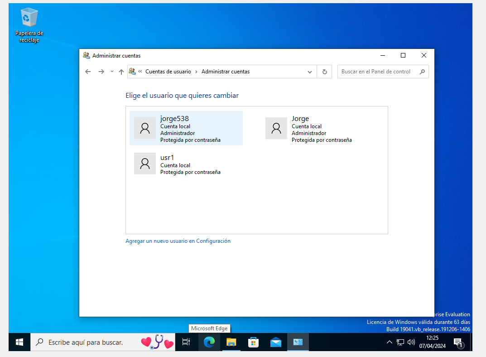
Selecciono "eliminar cuenta".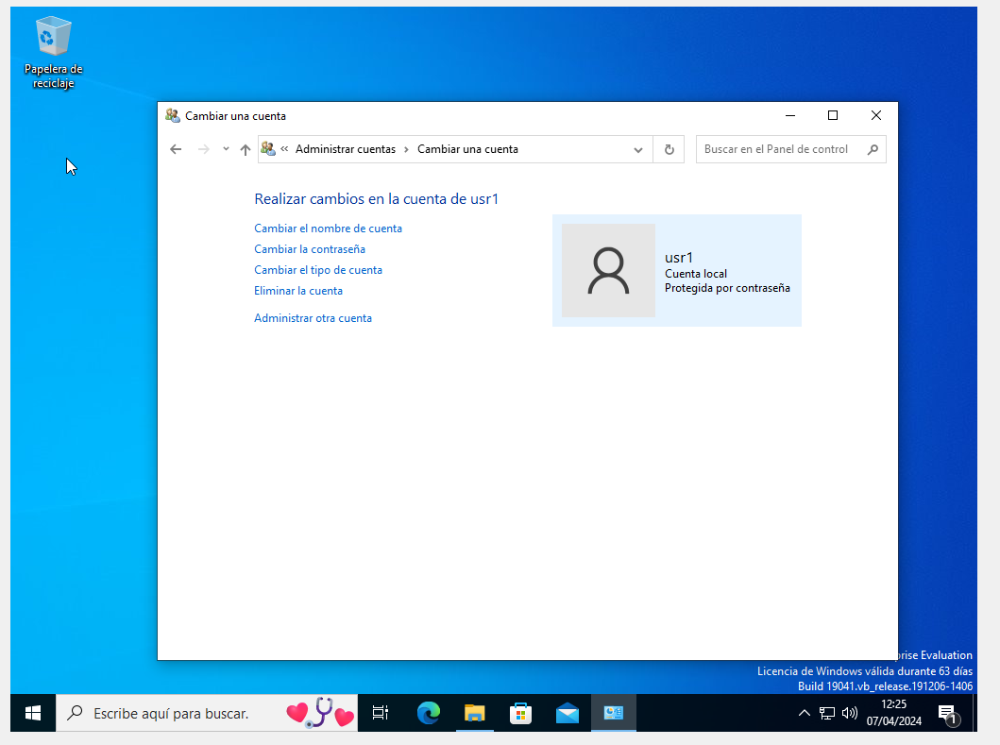
Selecciono "conservar archivos". Para no perder los rchivos cuando eliminemos la cuenta.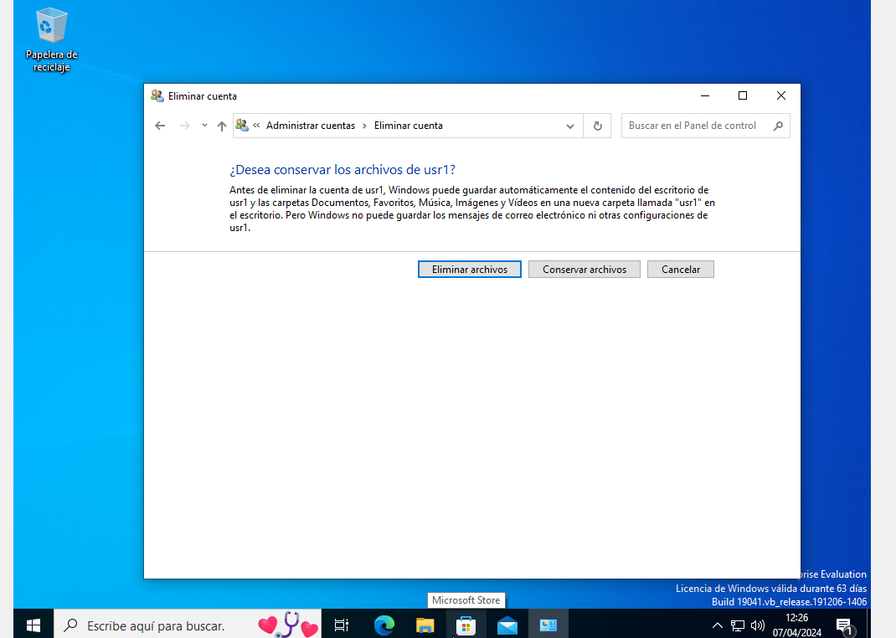
Selecciono "eliminar cuenta".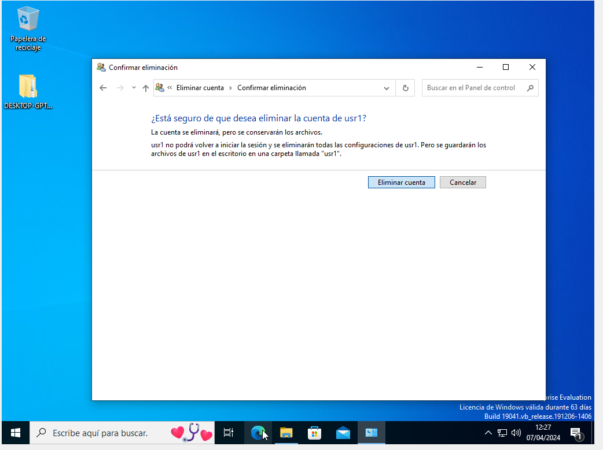
14. Comprueba que hay una carpeta nueva en tu escritorio. Entra y revisa qué es lo que hay y qué no hay en ella
Abrimos la carpeta que se acaba de crear y comprobamos que están los archivos de la cuenta eliminada.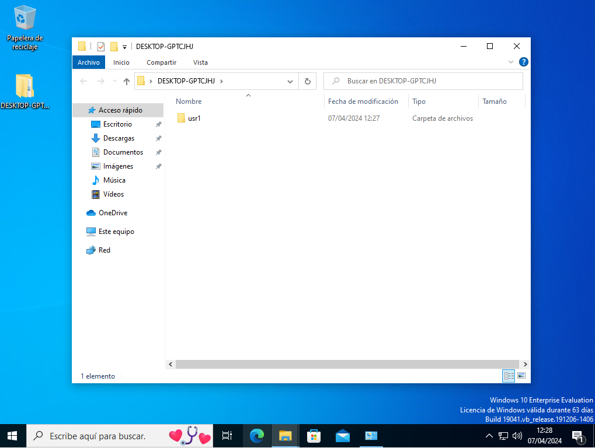
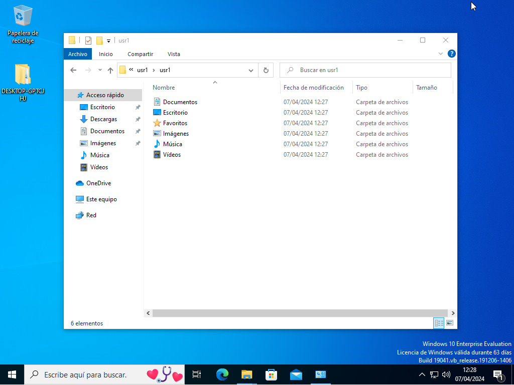
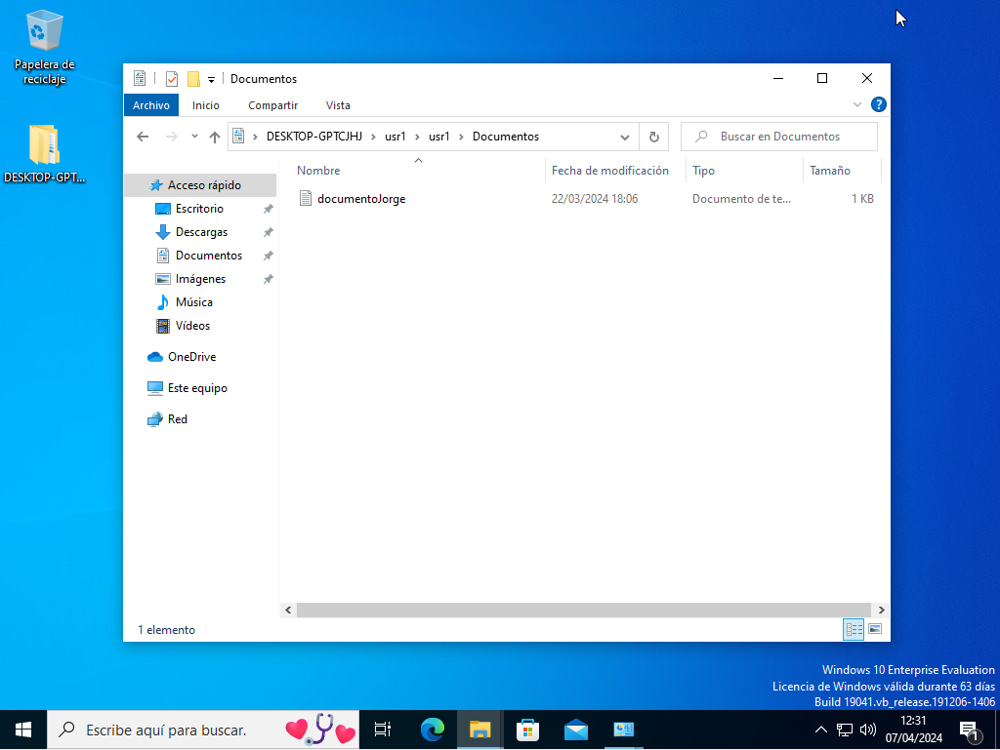
17. Habilita que se bloqueen las cuentas después de 3 intentos no válidos de poner la contraseña. (secpol.msc)
Modificamos el umbral de intentos para que se bloquee la cuenta si falla 3 veces a la hora de introucir la contraseña.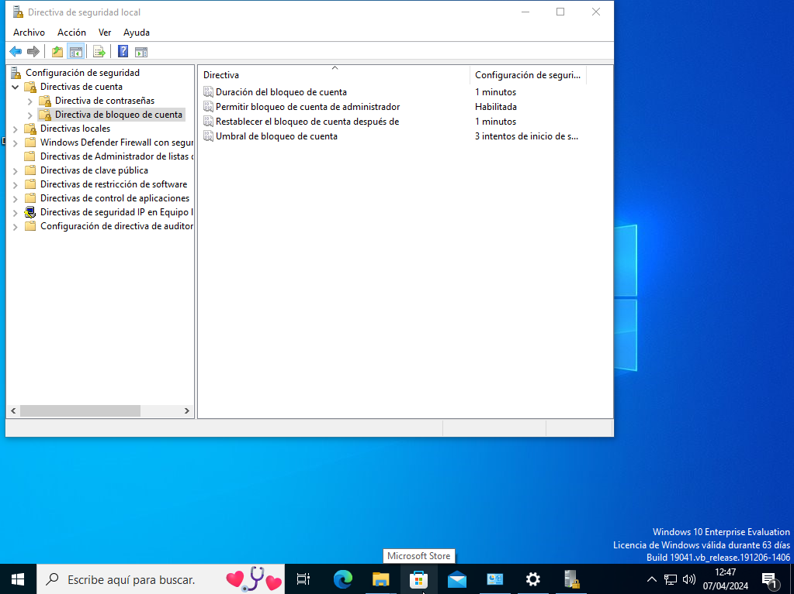
24. Intenta abrir sesión con el usuario adm11, pero equivócate 3 veces en la contraseña. Se debe bloquear la cuenta.
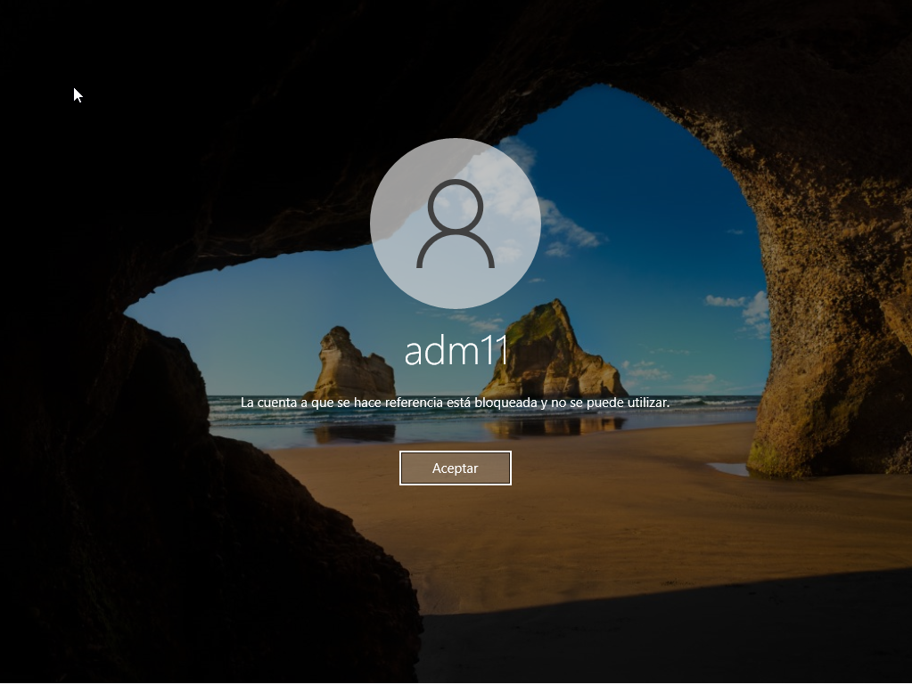
25. Entra al sistema como Alumno (administrador) y desbloquea la cuenta desde la ficha del usuario (pestaña General)
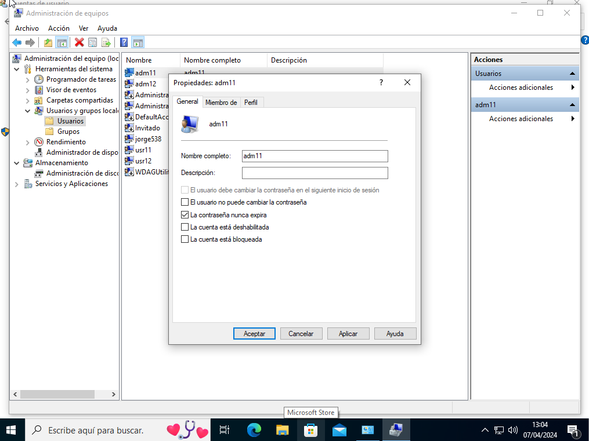
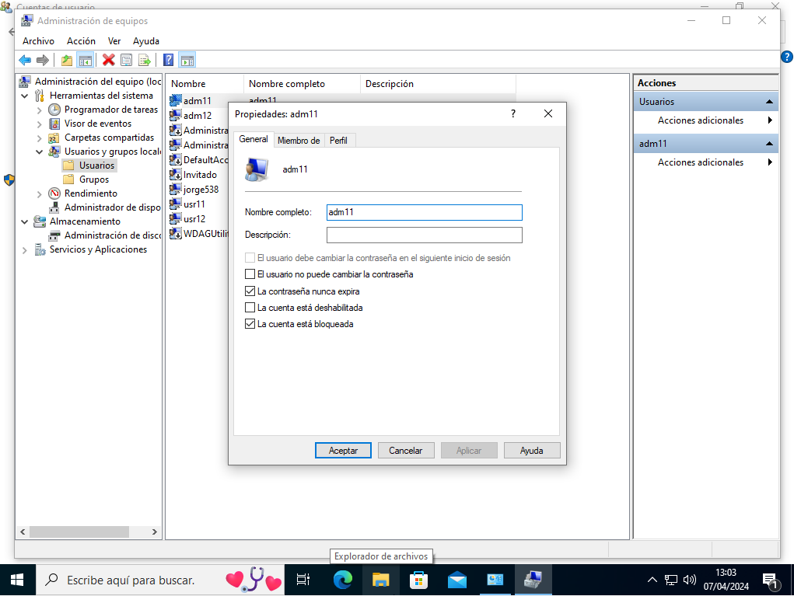
28. Crea en el escritorio una “nueva consola de administración” con los siguientes complementos:
No entendí que es lo que tenía que hacer.31. Ya debe aparecer el servicio del servidor FTP. Arranca el servicio FTP y configúralo para que se inicie unos minutos después de cada arranque del equipo
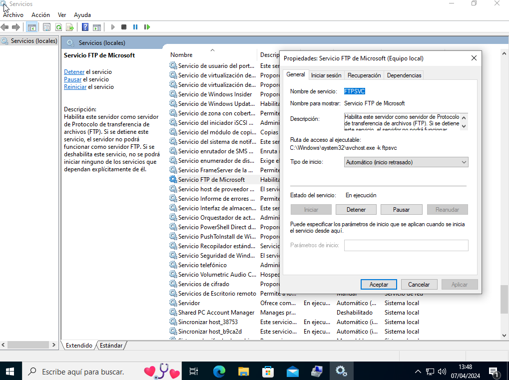
No supe hacer en el punto 28.